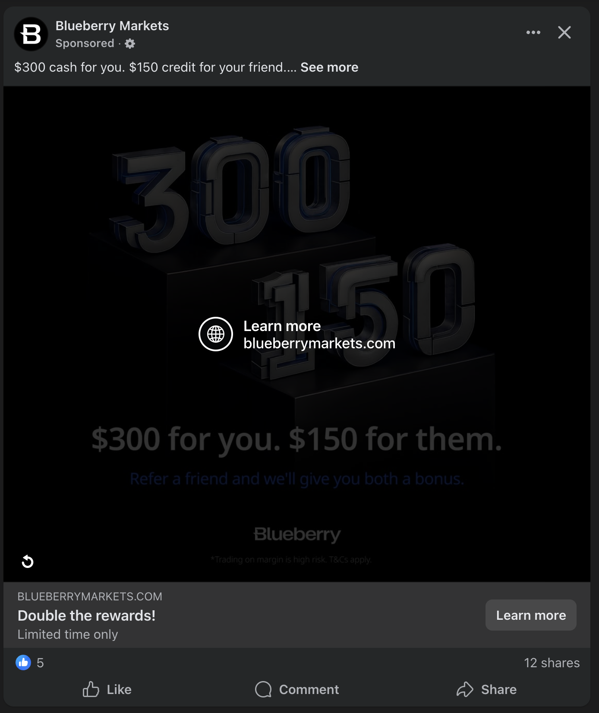

When to Reach out (CRM)
- Social proof the largest payouts
- Reach out regularly
- Reach out early during the funnel, after the first transaction, generally whenever is a good time to ask for a review is a good time to to ask for a referral
- Keep a refer a friend CTA in the footer of ALL your emails & customer comms to increase surface area.
Should I put Ads Behind My Refer-A-Friend Campaign?

Often growth teams will be tempted to “seed” or “push” a referrals campaign with ad dollars.
This is generally a bad idea, for various reasons. Primarily because the quality of the users you attract with this sort of campaign is sub-par. Second, the conversion rates are far lower than acquiring new users, given that users have to a) register themselves b) refer a new user. You are better off focusing on acquiring new users, and incentivising the conversion to a referral further down the line.